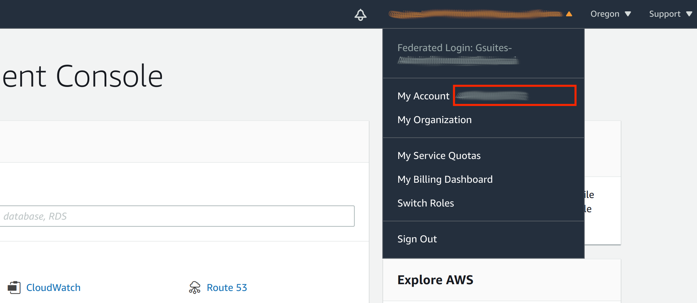

NPU 커널 드라이버 및 펌웨어 설치¶
FuriosaAI는 평가를 위한 환경 Alveo U250, AWS F1 에 대해 커널 드라이버 및 펌웨어를 제공한다. 평가 중인 환경에 맞게 아래 두 가지 중 알맞은 방식을 골라 설치를 진행한다.
Alveo U250 커널 드라이버 및 펌웨어 설치¶
$ git clone https://github.com/furiosa-ai/furiosa-fpga-install.git
$ cd furiosa-fpga-install
$ sudo ./install_furiosa_fpga_u250
Furiosa AI's F1 SDK has been successfully installed.
Please REBOOT this machine to complete the installation.
furiosa-fpga-install 저장소에 포함된 check_fpga_device 명령어로
설치가 성공적으로 되었는지 확인할 수 있다.
$ cd furiosa-fpga-install
$ ./check_fpga_device
[OK] Furiosa AI's FPGA device is detected.
AWS F1 커널 드라이버 및 펌웨어 설치¶
요구 사항¶
FuriosaAI에서 제공하는 평가용 AWS F1 FPGA 이미지 접근 권한이 필요 하다. AWS account ID를 Furiosa AI에게 공유하면 권한을 받을 수 있다.
AWS F1 인스턴스가 필요하며 현재 f1.2xlarge 타입만 지원 하며, f1 인스턴스는 AWS의 일부 지역에서만 사용 가능하다. (예, US East (N. Virginia))
FuriosaAI AWS F1 FPGA 이미지 접근 권한 획득 (AWS Account ID 전달)¶
AWS console 에 로그인 한 뒤에 우측 최상단 Account 이름을 클릭하면 팝업 창이 뜬다. My account 옆에 있는 빨간 박스에 위치한 12 자리 숫자 AWS Account ID 를 FuriosaAI에 전달한다.
설치¶
f1.2xlarge 인스턴스 생성후 인스턴스 내에서 아래 커맨드를 통해 커널 드라이버 및 펌웨어 설치 가능.
$ git clone https://github.com/furiosa-ai/furiosa-fpga-install.git
$ cd furiosa-fpga-install
$ sudo ./install_furiosa_fpga_aws_f1
...
Furiosa AI's F1 SDK has been successfully installed.
Please REBOOT this machine to complete the installation.
furiosa-fpga-install 저장소에 포함된 check_fpga_device 명령어로
설치가 성공적으로 되었는지 확인할 수 있다.
$ cd furiosa-fpga-install
$ ./check_fpga_device
[OK] Furiosa AI's FPGA device is detected.